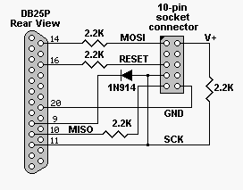
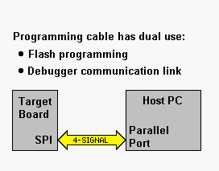

Forth for AVR microcontrollers
Atmel's AVR family of microcontrollers is Forth-friendly, having been designed for another popular stack-based language: 'C'. Firmware Studio serves as a good development tool for AVR code whether it's Forth or assembly.
You can compile code with Firmware Studio and download it using Atmel's AVRisp utility. Then, you may interactively test code from Firmware Studio's console. If you need to, AVRstudio (free from Atmel) lets you simulate execution of a hex file. If you don’t have a programming dongle or the one you have is crap (my Atmel-supplied dongle didn’t work at 3.3V) then use Firmware Studio's built-in AVR programmer (see below).
Firmware Studio produces subroutine threaded code and contains some optimizations to reduce some Forth sequences to machine code.
Application example: USB mouse interface.
This example illustrates the relationship between Forth source and compiled machine code. The code shown is for illustration (I don't support it), although I've used it successfully in a couple of applications.
To develop my USB code, I started with DEMOAVR.FF supplied
with Firmware Studio and added USB code to it. I used the “Token Browser”
window to see which words were dead code and then stripped KERNEL.FAR down to
about 35 words. Firmware Studio compiles subroutine threaded code.
Words that are very short are simply inlined.
Some words preceded by literals are optimized.
+, -, AND, OR, @, C@, ! and C! are optimized when used in conjunction
with literals, constants and variables.
I used some special defining words to slim down the USB code. These defining words have ANS Forth equivalents, which allowed me to test the code under a PC-hosted ANS Forth. My mouse thingy compiled to about 3K bytes:
| ROM contents | Size |
| Forth kernel (35 words) | 0.5K |
| Interface to PDIUSBD11 | 1.5K |
| Descriptor and misc. | 1.0K |
I used the DSAVE directive in Firmware Studio to save the ROM image in disassembled format. You can see the correspondence between Forth source and ROM machine code. Compare the USB source to the demo’s ROM contents.
Download Cable
AVR downloading and debugging cable. Works well at 3.3V and 5V. The socket connector is wired for Atmel's evaluation boards. If you use a ribbon cable for this, you might as well connect the extra ground pins to the DB25's ground pins (any of 18 thru 25) for a little better noise immunity. Note that some evaluation boards have LEDs loading down the PortB lines, so you'll have to pull the shorting blocks for PB5 thru PB7.
|  |  |
In order to use the download cable, you have to download and install DriverLinx Port I/O (downloads section) from Scientific Software Tools. It's freeware - Thanks, SST.
After installing this driver, Firmware Studio will be able to program AVR micros by twiddling lines on your PC's parallel port. Also, the debugger connection can talk through this same cable so that you free up the UART. LOADFLASH programs the ROM image into flash using this cable.
Register Usage
Forth uses the registers listed in the following table. The other registers are available for your application. You are free to use the scratchpad registers, but be aware that they may be changed by calls to Forth subroutines.
| Reg | Aliases | Usage | Reg | Aliases | Usage |
| R0 | WL, W | scratchpad | R16 | scratchpad | |
| R1 | WH | scratchpad | R17 | scratchpad | |
| R2 | UL, U | User pointer, | R18 | scratchpad | |
| R3 | UH | for multitasking | R19 | scratchpad | |
| R4 | R20 | ||||
| R5 | R21 | ||||
| R6 | R22 | ||||
| R7 | R23 | ||||
| R8 | R24 | AL, A | 'A' pointer | ||
| R9 | R25 | AH | |||
| R10 | R26 | XL,X,TOSL | Top of data stack | ||
| R11 | R27 | XH,TOSH | |||
| R12 | R28 | YL, Y | Data stack pointer | ||
| R13 | R28 | YH | |||
| R14 | R30 | ZL, Z | scratchpad | ||
| R15 | R31 | ZH | scratchpad |
May the Forth be with you.
The demo file DEMOAVR.FF gets you going quickly. FLOAD it and it generates DA.HEX. To program with Firmware Studio's cable, select AVR SPI Connection from the Target menu and then type LOADFLASH to program the AVR. Note that you can put commo=avr loadflash at the end of DEMOAVR.FF to automatically load the flash after a successful compile. If you want to use Atmel's programmer, use AVRISP to load DA.HEX into the AVR and connect the target board's UART port to the PC's RS232 port using a straight through serial cable.
The builder compiles subroutine threaded code. Words that are very short are simply inlined. Some words preceded by literals are optimized. +, -, AND, OR, @, C@, ! and C! are optimized when used in conjunction with literals. Note that variables and constants are considered literals.
For example, the definition : HEX 16 base ! ; compiles to something like this:
| 00578 E000 HEX: | LDI R16,0 |
| 0057A 93000101 | STS 101,R16 |
| 0057E E100 | LDI R16,16 |
| 00580 93000100 | STS 100,R16 |
| 00584 9508 | RET |
There’s a flag
in BLDAVR.G that enables speed optimization. Literals are inlined for speed.
They require 4 instructions and execute in 6 cycles.
With optimization turned off, literals are encoded using 2 or 3
instructions depending on the value.
Cooperative multitasking relies on the use of PAUSE.
PAUSE takes a lap around the task queue, so you should PAUSE whenever
you’re waiting for I/O. Context
switching is fairly quick. With an 8 MHz
xtal, PAUSE takes about 4us to do a context switch and 1.5us to skip over each
sleeping task -- not bad for an 8-bit micro.
The AVR demo demonstrates multitasking.
Every task must have a PAUSE or a word that calls
PAUSE in it, or it will hang the system. When
tasks are I/O bound, cooperative multitasking provides a very efficient way to
use CPU time. A sleeping task takes very
little CPU time, so you should SLEEP a task when it’s doing nothing.
Ideally you’d use an ISR to wake a task when it needs to do something.
Use an ISR to do the time-critical part of a task, then wake up a task to
finish the job and do clean up.
IFCLR and IFSET are special versions of IF.
They compile efficient bit tests using the SBRS and SBRC instructions.
Sample Usage: [ 3 ] IFCLR SWAP THEN is the same as DUP 8
AND 0= IF SWAP THEN.
A compact CASE-like structure is similar.
The restrictions are: Only the low byte of c
is used and each case must be short enough to be covered by a short branch.
Also, there is nothing following the QCASE structure.
]?
compiles an exit. For example:
| : test | ( c -- ) |
|
qcase: |
[ 1 ] ?[ sqrt ]? |
| [ 3 ] ?[ dist ]? | |
| [ 5 ] ?[ dup over rot ]? | |
| ; |
This is equivalent to the ANS Forth CASE structure:
| : test | ( c -- ) | |
|
case |
1 of sqrt | endof |
| 3 of dist | endof | |
| 5 of dup over rot | endof | |
| endcase | ; |
DEMOAVR.FF builds a hyperlink index for the Winview editor. As you expand the system, you can end up with a huge number of keywords. In Winview, if you’re not sure how a word is supposed to behave, place the cursor on it and hit F9. The source code for the word will pop up. In the Firmware Studio console, you can VIEW FOO to browse the source or SEE FOO to disassemble the ROM image of the word FOO.
Browse
Firmware Studio's help file for more information.
Assembler
The assembler uses Atmel's instruction syntax.
An instruction consists of an instruction name and an operand list.
The operand list mustn't contain spaces.
You can put multiple instructions on the same line.
Subroutines start with CODE and end with C;
or END-CODE. Browse KERNEL.FAR for lots of examples.
Inline assembly can be placed in Forth : definitions
by enclosing it within C[ and ]C.
R20 to R23 are free for your use, and they make good state machine pointers. Consider the following example of a simple state machine. The VECTOR macro compiles two LDI instructions to load register pair R21:R20. Each call to DOSTATE changes state.
| code state3 | ldi R16,1 out PortB,R16 |
| vector{ |
|
| code state2 | ldi R16,2 out PortB,R16 |
| vector R20,state3 ret c; | |
| code state1 | ldi R16,4 out PortB,R16 |
| vector R20,state2 ret c; | |
| }vector R20,state1 | |
| code dostate | mov ZL,R20 mov ZH,R21 ijmp c; |
The assembler has a number of extra instructions:
| CYCLE_DELAY | ( n -- ) | Lays down code to produce exact time delays of 0 to 770 cycles. For example, 49 CYCLE_DELAY compiles code to waste 49 clock cycles. R16 is cleared. |
| LDI_R16[ | ( <asmlabels> ] -- ) | Compiles an LDI R16,N instruction using a list of bit positions. It's useful for defining initialization code for ports. A list of bit labels is delimited by a bracket. For example, if RXEN is 4 and TXEN is 3, LDI_R16[ RXEN TXEN ] sets bits 4 and 3 to form LDI R16,0x18. |
| LDIW | ( <label> -- ) | Compiles two LDI instructions to load a register pair with a 16-bit constant. |
| LDIP | ( <label> -- ) | Same as LDIW but divides the label data by 2 to serve as a program address. |
| JSR | ( <label> -- ) | Compiles an RCALL if possible, otherwise it compiles CALL. |
| GOTO | ( <label> -- ) | Compiles an RJMP if possible, otherwise it compiles JMP. |
| REGISTER: | ( n <name> -- ) | Defines a new register name. For example, 23 register: flags creates an alias for R23 called flags. |
| JUMP[ | ( <reg> <labels> -- ) | Compiles
code for a jump table that uses R16 as the index.
Any register may be used. This
must be a one-liner. Example: JUMP[ R16 label1 label2 … labelN ]JUMP |
| LPM | ( <param> -- ) |
The LPM and SPM instructions need a parameter list, even though they may be implicit. Just use a | character in this case. Example: LPM | . |
Operands
An immediate operand can an assembly-label, number, local label, code-address, or ASCII character in that order. For example, if you define a Forth word called ‘0’, rcall 0 calls address 0x0000 because it found ‘0’ as a number before it found it in the code address list. When in doubt, try it and SEE the result. ASCII characters are characters between two tick marks. For example, LDI R16,’A’.
Local labels are @@0 thru @@9 (see below).
Local assembly labels @@0 thru @@9 are available for
compile-time calculations by the Forth interpreter.
Words between brackets {{, }} are assumed to be in
the home vocabulary and not target words. Example:
| {{ asmlabel? PortA 1+ >@@0 }} | Sets the value of local label @@0 |
| ldi R16,@@0 | Uses the local label @@0 |
Branches are compiled using control structures.
You can extend the compiler BLDAVR.G to support local address labels, but
I've found control structures sufficient for defining any kind of branching I
need to do. They are also more
readable.
FOR
… NEXT Rn compiles code to do something 1 to 256 times.
The NEXT lays down code to decrement Rn and branch back if not zero.
IF_Z
<code…> THEN compiles a BRNE past the <code> instructions.
So, the code only executes if the Z flag is set.
IF_NZ, IF_C, IF_NC, etc. are similar.
IF_Z
<code1…> ELSE <code2…> THEN is similar.
If the Z flag is set, <code1> executes.
Otherwise, <code2> executes.
NEVER
is a version of IF that branches around code.
NEVER
THEN and NEVER
ELSE THEN
are useful when they are preceded by a conditional skip instruction.
BEGIN
<code…> AGAIN compiles
a forever loop. A skip is useful
before the AGAIN.
BEGIN
<code…> UNTIL_Z compiles
a loop ending in a BRNE instruction. UNTIL_NZ, UNTIL_C, UNTIL_NC, etc. are similar.
BEGIN
<code1…> WHILE_Z <code2…> REPEAT is good for doing something zero or more times.
WHILE_Z
compiles a BRNE
past <code2> and REPEAT
compiles a branch to the beginning of <code1>.
NOWAY
is a version of WHILE
that compiles an unconditional jump. Put
a skip in front of it.
CONTINUE
can be placed between WHILE
and REPEAT
to branch back to BEGIN.
MULTI
Rn <code…> REPEAT
is good for doing something zero or more times. Similar to a FOR
loop but used to do something 0 to 128 times. MULTI lays down DEC Rn and BRPL.
CASE
R16 # OF .. ENDCASE compiles a CASE structure consisting of CPI R16,#
instructions and branches. Registers are restricted to R16 to R31.
Example
of case usage. Note that
|endof
assumes the last instruction was a jump so it omits
its own jump.
| case R16 | 10 of rcall ten | endof |
| 11 of rcall eleven | endof | |
| 12 of rjmp twelve | |endof | |
| rcall otherwise | ||
| endcase |
Browse
BLDAVR.G to see the assembler and builder source.
You can add you own directives and see how the existing ones work.